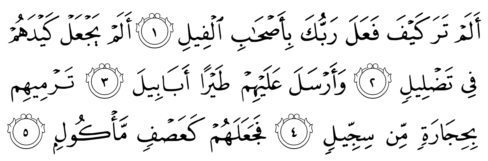
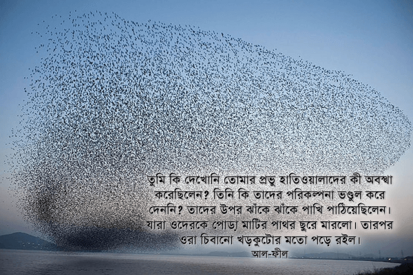

তুমি কি দেখোনি তোমার প্রভু হাতিওয়ালাদের কী অবস্থা করেছিলেন? তিনি কি তাদের পরিকল্পনা ভণ্ডুল করে দেননি? তাদের উপর ঝাঁকে ঝাঁকে পাখি পাঠিয়েছিলেন। যারা ওদেরকে পোড়া মাটির পাথর ছুরে মারলো। তারপর ওরা চিবানো খড়কুটোর মতো পড়ে রইল। —আল-ফীল
রাসুল عليه السلام জন্ম হওয়ার কয়েক বছর আগে ইয়েমেনের একজন গভর্নর আবরাহা দেখল যে, মক্কায় কা’বাকে ঘিরে ব্যাপক ব্যবসা-বাণিজ্য হচ্ছে। বিপুল পরিমাণ মানুষ হাজ্জ করতে আসে। সে সুযোগে মক্কাবাসীরা হাজিদের সাথে ব্যবসা করে অনেক সম্পদের অধিকারী হয়ে যায়। তখন সে ভাবল যে, সে-ও একটা বিরাট গির্জা তৈরি করবে এবং হাজ্জের মতো সেই গির্জাতে তীর্থযাত্রা করার প্রচলন করবে। কিন্তু তার পরিকল্পনা কাজে লাগলো না। তার সাধের গির্জাতে বেশি মানুষ আসলো না। শুধু তাই না, কিছু আরব গিয়ে তার গির্জায় আগুন লাগিয়ে দিলো। তখন সে মহা ক্ষেপে গিয়ে তার বাহিনী নিয়ে মক্কায় গেল কা’বা ধ্বংস করে দিতে।
মক্কার কাছে এসে আবরাহার বাহিনী কুরাইশদের নেতা আব্দুল মুত্তালিব, যিনি রাসুল عليه السلام এর দাদা ছিলেন, তার উটগুলো ছিনিয়ে নিয়ে নিলো। তারপর আবরাহা দূত পাঠাল কুরাইশদের কাছে যে, সে আসলে মক্কাবাসিদের আক্রমণ করতে চায় না, শুধুই কা’বাই ধ্বংস করতে চায়। তখন আব্দুল মুত্তালিব আবরাহার সাথে দেখা করে বললেন, “আমার উটগুলো ফিরিয়ে দাও”। আবরাহা বিরক্ত হয়ে বলল যে, সে এসেছে কা’বা ধ্বংস করতে, আর তাকে সে ব্যাপারে কিছু না বলে বলা হচ্ছে উট ফিরিয়ে দিতে? তখন আব্দুল মুত্তালিব এক অসাধারণ কথা বললেন, “আমি হচ্ছি এই উটগুলোর প্রতিপালক। কা’বার একজন প্রতিপালক আছেন। তিনিই সেটাকে রক্ষা করবেন।” তখন আবরাহা বলল, “কেউ আমাকে ঠেকাতে পারবে না।” আব্দুল মুত্তালিব উত্তর দিলেন, “যাও করো।”[১৭][৫]
আবরাহা তার হাতি বাহিনী নিয়ে চলল কা’বা ধ্বংস করতে। সেই হাতি বাহিনীকে ঠেকানো মক্কাবাসীর পক্ষে সম্ভব নয়। তাই তারা সবাই যার যার সহায় সম্পত্তি নিয়ে পাহাড়ের উপরে উঠে আশ্রয় নিলো। কা’বা সম্পূর্ণ অরক্ষিত। হাতি বাহিনী কোনো বাঁধা ছাড়াই কা’বার দিকে এগিয়ে যাচ্ছে। তখন দূর দিগন্ত থেকে ঝাঁকে ঝাঁকে পাখি এসে পোড়া মাটির পাথর মেরে পুরো বাহিনীকে ঝাঁজরা করে দিলো। প্রচণ্ড শক্ত মাটির পাথরগুলো স্নাইপার বুলেটের মতো ভীষণ গতিতে আঘাত করে দেহ ফুটো করে বেরিয়ে গেলো। যার ফলে তারা চিবানো খড়কুটোর মতো পড়ে রইলো।

পাখিরা প্রায় ৬০০০ থেকে ১০,০০০ মিটার উঁচুতে উড়তে পারে। ধরুন, ৬০০০ মিটার উঁচু থেকে একটি পাখি একটা পাথর ছুড়ে মারল। তাহলে সেই পাথরটি একটি মানুষকে আঘাত করবে ঘণ্টায় প্রায় ১২০০ কিলোমিটার গতিতে। এটা কত ভয়ংকর গতি তা বোঝাতে কিছু তুলনা দেওয়া দরকার। গাড়ি হাইওয়েতে চলে ঘণ্টায় মাত্র ১০০ কিমি গতিতে। প্লেন চলে প্রায় ১০০০ কিলোমিটার গতিতে। ১২০০ কিলোমিটার হচ্ছে বুলেটের গতির কাছাকাছি। একটা পাখি যদি আকাশ থেকে আমাদের উপর পাথর ফেলে, তাহলে তা প্রায় বুলেটের গতিতে আমাদেরকে আঘাত করবে। ঝাঁকে ঝাঁকে পাখি যদি পাথর বৃষ্টি করতে থাকে, তাহলে সেটা হবে এক বিমান বাহিনী আকাশ থেকে মেশিনগান দিয়ে গুলি বৃষ্টি করে নিচের মানুষকে ঝাঁজরা করে দেওয়ার অনুরূপ।
যারা তাদেরকে পোড়া মাটির পাথর ছুরে মারলো।
হিজারাতিম মিন সিজ্জিল — حِجَارَةٍ مِّن سِجِّيلٍ —অর্থ হচ্ছে সিজ্জিল থেকে তৈরি পাথর। সিজ্জিল একটি পারস্য অথবা সিরিয় শব্দ। এর অর্থ পোড়া মাটি। পোড়া মাটির পাথর হচ্ছে প্রাচীনতম বুলেট। প্রত্নতত্ত্ববিদরা কিছু পুরনো সভ্যতায় খুঁজে পেয়েছেন যে, সেখানকার মানুষরা ভেজা মাটি দিয়ে গুলির মতো বল বানিয়ে, তারপর তা পুড়িয়ে পাথরের মতো শক্ত করে গুলতির মতো একধরনের অস্ত্র দিয়ে ছুড়ে আঘাত করতো। যথেষ্ট জোরে মারলে তা দেহ ফুটো করে ফেলতে পারে। এই ধরনের মাটি দিয়ে তৈরি গুলি হাজার বছর আগে যুদ্ধে এবং শহরের প্রতিরক্ষায় ব্যবহার হতো। এছাড়া পশু শিকার করতেও এটা ব্যবহার করা হতো।[৩৯৪]
সিজ্জিল শব্দটি এসেছে সিজিল থেকে, যার অর্থ লিখিত নির্দেশনামা। আল্লাহ تعالى যেন প্রতিটা পাথরের গায়ে লিখে দিয়েছিলেন সেটা ঠিক কাকে গিয়ে, কোথায় আঘাত করবে। প্রতিটা পাথর ছিল । একদম নিশানা করে মারা।
তারপর ওরা চিবানো খড়কুটোর মতো পড়ে রইল
আল্লাহ تعالى এখানে ভয়ংকর বর্ণনা দিয়েছেন পাখির আক্রমণের পর আবরাহার বাহিনীর কী বীভৎস অবস্থা হয়েছিল। তারা যে শুধু খড়কুটোর মতো পড়ে ছিল তা নয়, বরং চিবানো খড়কুটোর মতো। গবাদি পশু খড়কুটো চিবিয়ে ফেলে দিলে যে অবস্থা হয়, ভেজা-স্যতস্যাতে, রস গড়িয়ে পরা, পচা দুর্গন্ধযুক্ত, দুমড়ে মুচড়ে যাওয়া খড়কুটো, ঠিক সেই অবস্থা হয়েছিল আবরাহার বাহিনীর। মানুষের উপর বুলেট বৃষ্টি করে ঝাঁজরা করে দিলে সে এক বিকট দৃশ্য হয়। সেই বীভৎস দৃশ্যের বর্ণনা দেওয়া হয়েছে এখানে।
মানুষ যখন আল্লাহর تعالى অবাধ্য হয়ে যায়, তখন আল্লাহ تعالى তাদেরকে ধ্বংস করে দেন খুবই সাধারণ কিছু পদ্ধতি ব্যবহার করে। অবাধ্য মানুষ পাহাড়ের ভেতরে পাথর কেটে তৈরি করা দুর্ভেদ্য প্রাসাদে থাকুক, চারিদিকে উঁচু দেওয়াল ঘেরা সুসজ্জিত দুর্গে থাকুক, অথবা শক্তিশালী হাতি বাহিনী নিয়ে আক্রমণ করুক না কেন, আল্লাহ تعالى তাদেরকে ধ্বংস করে দেন বাতাস, পাখি, শব্দ এগুলোর মতো সাধারণ জিনিস দিয়ে। আপাতদৃষ্টিতে বাতাস, পাখি, শব্দ কোনো শক্তিশালী অস্ত্র মনে না হলেও, আল্লাহ تعالى যখন এগুলোকে অস্ত্র হিসেবে ব্যবহার করেন, তখন এগুলো মানুষের সবচেয়ে শক্তিশালী প্রতিরক্ষা ব্যবস্থাও মুহূর্তের মধ্যে গুড়িয়ে দিতে পারে। ১৯১৮ সালে এক স্প্যানিশ ফ্লু রোগে পুরো পৃথিবীর তিনভাগের একভাগ মানুষ আক্রান্ত হয়েছিল, ২ থেকে ৫ কোটি মানুষ মারা গিয়েছিল। একটি ক্ষুদ্র জীবাণু মানবজাতির এত বড় অংশকে শেষ করে দিয়েছিল। এগুলো আল্লাহর تعالى ভয়ংকর ক্ষমতার নিদর্শন, অবাধ্য মানুষদের জন্য ভাবনার বিষয়।
[১] বাইয়িনাহ এর কু’রআনের তাফসীর। [২] ম্যাসেজ অফ দা কু’রআন — মুহাম্মাদ আসাদ। [৩] তাফহিমুল কু’রআন — মাওলানা মাওদুদি। [৪] মা’রিফুল কু’রআন — মুফতি শাফি উসমানী। [৫] মুহাম্মাদ মোহার আলি — A Word for Word Meaning of The Quran [৬] সৈয়দ কুতব — In the Shade of the Quran [৭] তাদাব্বুরে কু’রআন – আমিন আহসান ইসলাহি। [৮] তাফসিরে তাওযীহুল কু’রআন — মুফতি তাক্বি উসমানী। [৯] বায়ান আল কু’রআন — ড: ইসরার আহমেদ। [১০] তাফসীর উল কু’রআন — মাওলানা আব্দুল মাজিদ দারিয়াবাদি [১১] কু’রআন তাফসীর — আব্দুর রাহিম আস-সারানবি [১২] আত-তাবারি-এর তাফসীরের অনুবাদ। [১৩] তাফসির ইবন আব্বাস। [১৪] তাফসির আল কুরতুবি। [১৫] তাফসির আল জালালাইন। [১৬] লুঘাতুল কুরআন — গুলাম আহমেদ পারভেজ। [১৭] তাফসীর আহসানুল বায়ান — ইসলামিক সেন্টার, আল-মাজমাআহ, সউদি আরব [১৮] কু’রআনুল কারীম – বাংলা অনুবাদ ও সংক্ষিপ্ত তাফসীর — বাদশাহ ফাহাদ কু’রআন মুদ্রণ কমপ্লেক্স। [১৯] তাফসির আল-কাবির। [২০] তাফসির আল-কাশ্শাফ। [৩৯৪] Season 2012 | Swedish Archaeology in Jordan, Palestine and Cyprus, Peter Fischer. (2017). Web.archive.org. Retrieved 29 July 2017, from https://web.archive.org/web/20170729223856/http://www.fischerarchaeology.se/?page_id=1295